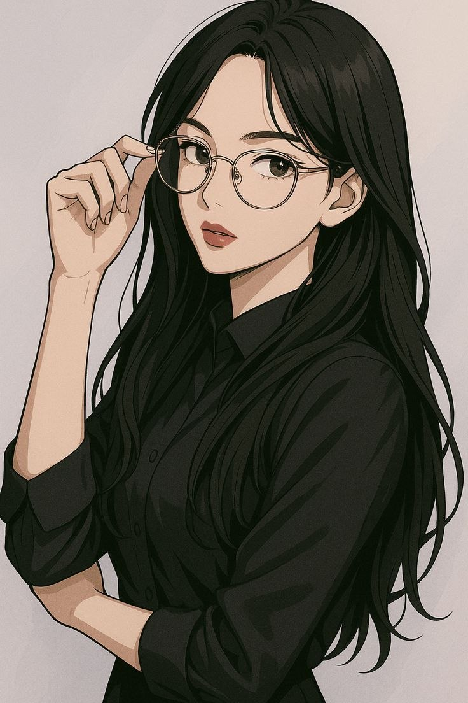

Her Voices Rising
Untold Stories of Afghan Girls
This platform shares the voices of Afghan girls whose stories are often unheard. Through safe and respectful storytelling, we aim to highlight their real experiences, challenges, and strengths.
Our goal is to create understanding by sharing real voices, not just opinions. We believe that when stories are heard directly, they can build empathy and awareness.
stories of strength
These stories focus on courage, growth, and resilience. Despite challenges, many Afghan girls continue to learn, adapt, and move forward with strength.

Gurdaafarid’s Journey
Gurdaafarid, a young girl from northern Afghanistan, shares her journey of fighting for education and freedom despite social pressure and danger.

Sahar’s Journey
Sahar, a young Afghan woman and volunteer teacher, shares her journey of continuing her education despite hardship and helping other girls learn.

Laila’s Dreams
Laila, a 15-year-old from Mazar-i-Sharif, shares her dreams of becoming a doctor and helping others.
Rural Voices
Girls in rural areas often face additional challenges, including limited access to education and fewer opportunities to share their voices. These stories reflect both their struggles and their strength.
Laila’s Journey
Laila, a rural woman from Baghlan, shares her life of hardship, forced marriage, and her quiet hope for a different future.
Amina’s Journey
Amina, a 16-year-old from Kabul, shares her story of overcoming obstacles to pursue her education and dreams.
Amina’s Journey
Amina, a 16-year-old from Kabul, shares her story of overcoming obstacles to pursue her education and dreams.
hidden struggles
Not all challenges are visible. Many girls face silent struggles shaped by social expectations, limited opportunities, and lack of representation. These stories aim to bring those hidden realities to light in a respectful way.

The Night of Waiting
A young girl from Kabul shares her journey of living through loss, silence, and longing after being separated from her education and dreams.

Gulnisa’s Journey
Gulnisa, a girl from a remote mountain village, shares her journey of forced marriage, violence, and her struggle to survive and protect her children.

Sajida’s Journey
Sajida, a 40-year-old Afghan woman, shares her life of abuse, survival, and her quiet struggle to protect her children in a world that gives her no support.

Marzia’s Journey
Marzia, a former professional and breadwinner, shares her journey of losing her work, her independence, and her sense of stability and her struggle to survive and hold onto hope.
inspire & learn
Every story teaches something. This section highlights the key lessons and insights we can learn from the experiences of Afghan girls.
- Strength can grow even in difficult situations
- Support from others can make a difference
- Every voice deserves to be heard
- Small opportunities can lead to big change
research & insights
This section presents key findings from our research, including patterns identified from stories and survey responses.
After analyzing collected stories, several common themes appeared:
- Barriers to education
- Social expectations
- Limited opportunities to express ideas
- Strong resilience and determination
Survey responses also show that many people believe girls do not have enough opportunities to share their voices.
understanding the system
The challenges faced by Afghan girls are not only personal. They are connected to larger systems in society.
- Education systems can limit opportunities
- Social and cultural expectations influence how freely girls can express themselves.
- Media often represents girls without including their real voices.
- Access to technology also affects who can share their experiences.
Understanding these systems helps explain why these challenges exist and how change can happen.
ethics & safety
Our Responsibility
We are committed to protecting the safety and dignity of every individual whose story is included in this project.
- All stories are anonymized
- No real names or exact locations are shared
- Sensitive details are changed when necessary
- Consent is considered before sharing any story
We aim to share stories in a respectful, safe, and responsible way.
about us & our team
We are a group of students working on a social change project focused on voice, representation, and equality.
Through this project, we aim to create a safe and meaningful space where the real stories of Afghan girls can be shared and understood. By combining storytelling with research, we hope to raise awareness, build empathy, and highlight both challenges and strengths.
Each member contributed to research, analysis, and development of this project.

Masuma Barati
Website Developer
Responsible for designing and building the platform and organizing content.
Maleka Ahmadi
Main Researcher
Collected primary data through interviews and supported analysis of stories.

Maryam Ahmadi
Leader & Researcher
Led the team by organizing tasks and guiding the project direction.
Conducted research through interviews and secondary sources, and
supported analysis to identify key patterns and insights.
Zahra Akbari
Main Researcher
Reviewed secondary sources and helped identify key themes and insights.